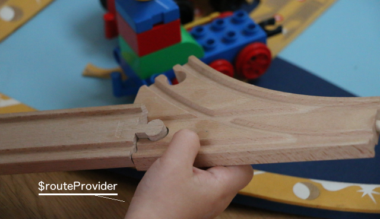
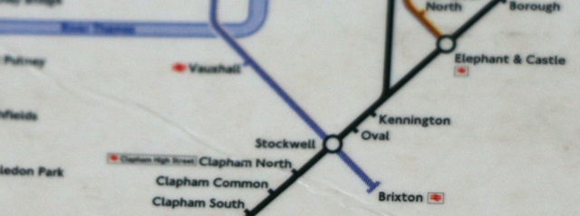
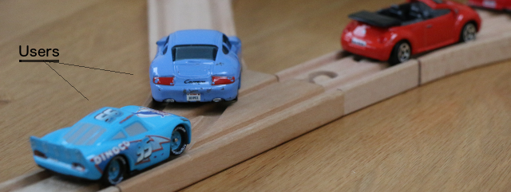
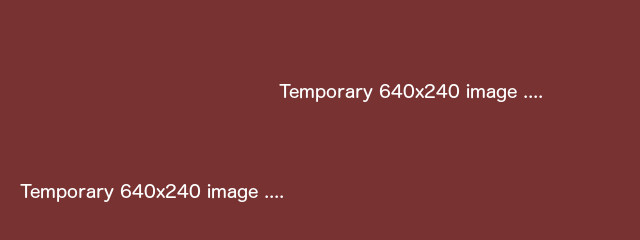
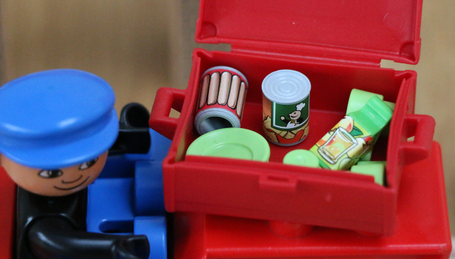
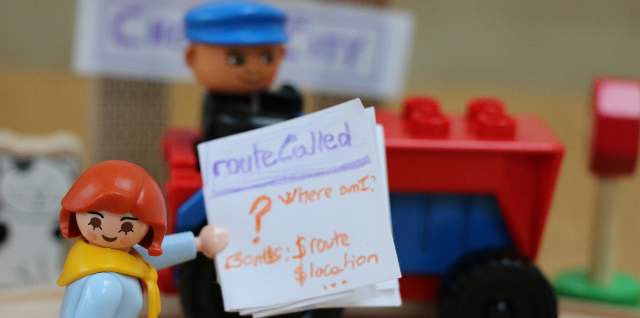

This is an illustrated introduction to the angular-hierarchical-route module which purpose is to help you build and use routes in your AngularJS app.
The README file provides a more succinct version of this content.
[1] Building routes
Before the app starts offering its services to the users, the route gets assembled ...

... with the $routeProvider of ngRoute when configuring your application AngularJS module:
angular.module('sample.routes', ['ngRoute'])
.config(['$routeProvider', function($routeProvider) {
$routeProvider.when('/home', {templateUrl: 'home/home.html',
controller: 'HomeCtrl'});
// ...
}]);When you want to associate several routes to a view (displayed with the ng-view directive), you can use this module to create a hierarchical route. A hierarchical route functions like an underground line:

It has places where you can join and stop: similar to the stations of an underground line. This metaphor also applies to the relationship between a hierarchical route and a route: a route belongs to a hierarchical route in the same way as a station belongs to an underground line.
[2] Defining hierarchical routes
To define a hierarchical route, you need to inject the hierarchyProvider in the config method of your module:
angular.module('sample.routes', ['ngRoute', 'angularHierarchicalRoute'])
.config(['$routeProvider', 'hierarchyProvider',
function($routeProvider, hierarchyProvider) {
hierarchyProvider.add({
rootPath: '/home',
templateUrl: 'home/home.html',
controller: 'HomeCtrl'})
.callableFrom('/home','home')
.callableFrom('/home/:countryId','choose city')
// ...
.registerWith($routeProvider);All routes in the hierarchy share the same view and controller. The rootPath must be one of the routes in your hierarchy and is the default entry point to your view.
Finally you register your hierarchical route with $routeProvider .
When all your routes are created, your application can start receiving users.

[3] Users on your route
Users (the vehicle on the photo) will be taking the routes defined in your app. When the route they are on corresponds to a callable route (a station), the controller will be provided with a resolved object:
.controller('HomeCtrl', ['$scope', 'resolved',
function($scope, resolved) {
//Set loaded data in scope
$scope.countries = resolved.countries;
$scope.cities = resolved.cities;
//...
}])This object is a map of the data to resolve.

The data to resolve is defined when creating the callable route: 
.callableFrom('/home/:countryId','choose city')
.resolve({
countries: annotatedFnCountries,
cities: annotatedFnCities
})where annotatedFnCountries and annotatedFnCities are functions returning promises with annotations to inject dependencies:
var annotatedFnCountries = ['adminService',
function(adminService) {
return adminService.countries();
}];
var annotatedFnCities = ['adminService', '$route',
function(adminService, $route) {
return adminService.citiesForCountry($route.current.params.countryId);
}];[4] Route guidance
The controller also gets provided a routeCalled object which acts as a guidance leaflet to:
- know where you are
- access ngRoute's services:
$route,$locationand$routeParams - navigate to other stations in the line

[5] View constants
Similar to the promises to resolve, your can define constants that will be passed to the controller when a user is at your station.
For example:
.callableFrom('/home/:countryId/:cityId','current')
.constants({weatherView: 'home/current-weather.html'})is made available to the controller under the name constants:
.controller('HomeCtrl', ['$scope', 'constants',
function($scope, constants) {
//...
$scope.weatherView = constants.weatherView;
//...
}])This mechanism allows to include sub-views with the directive ng-include='*constant*'. This reduces the number of elements in your view that are shown or hidden: ng-show=*toggle*, which as a consequence makes your view more readable.
For instance, what would be in one view as:
<div class="col-xs-6" ng-show="cityId && (! forecastMode)">
<!-- view content ...-->
</div>
<div class="col-xs-6" ng-show="cityId && forecastMode">
<!-- view content ...-->
</div> can now be written as:
<div class="col-xs-6" ng-show="cityId" ng-include="weatherView">[6] Navigation
Go to by name
This is about going to a station in an underground line by knowing the station name. You invoke the routeCalled.goTo function:
routeCalled.goTo('choose city', params);Go to by parameter signature
As well as you could describe an underground station by its characteristics: "a station with green walls and yellow ceiling", here you identify a station by the keys that are used in the route definition. For instance:
routeCalled.goToFirstWith({countryId: value});would stop at the first callable route within this hierarchical route which has :countryId as a key in the route and nothing else.
Update current parameters or go to by parameter signature
If the user updates the content an existing route parameter, the routeCalled.updateOrGoToFirstWith function will stay on the same view but updated parameters.
When new parameter is added, the routeCalled.updateOrGoToFirstWith function will search for a callable for this new set of parameter keys. In this case this works as the routeCalled.goToFirstWith function.
routeCalled.updateOrGoToFirstWith({countryId: value, cityId: newValue});Thank your for your attention.